Bakery
CAP Boulanger. Sixteen English words of the trade: tools, objects and everyday gestures. Open to everyone.
Four steps: from French to English, listen and choose, match, and complete a sentence at work. The Listen button reads the word in British English.
Word list
| Image | Français | English | Audio |
|---|---|---|---|
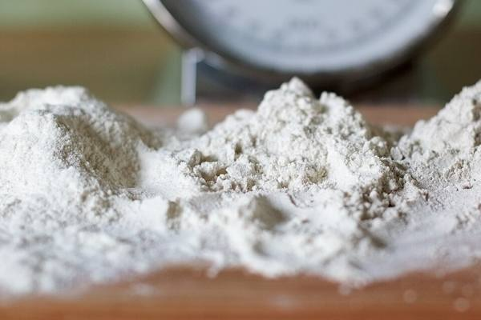 | la farine | flour | |
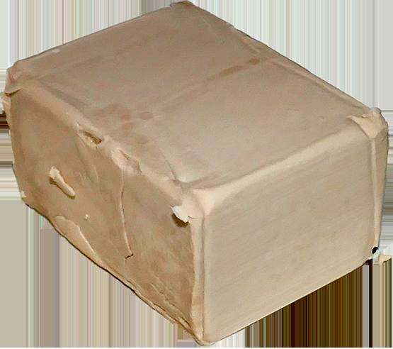 | la levure | yeast | |
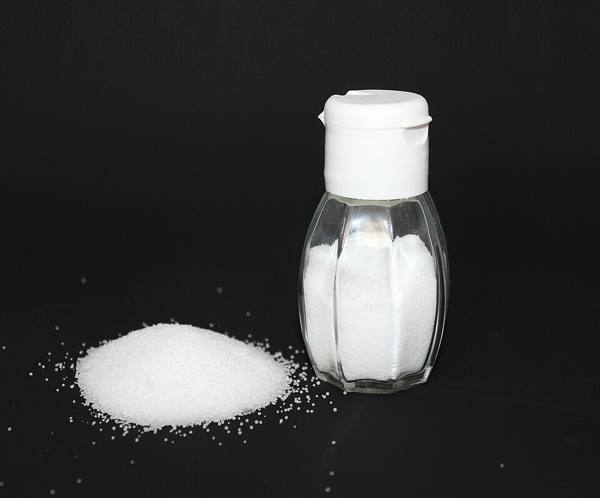 | le sel | salt | |
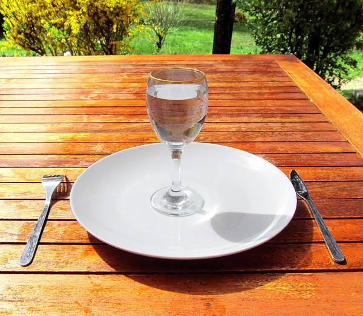 | l'eau | water | |
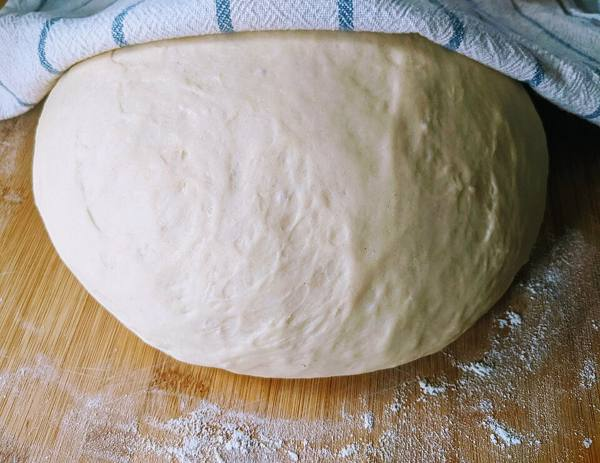 | la pâte | dough | |
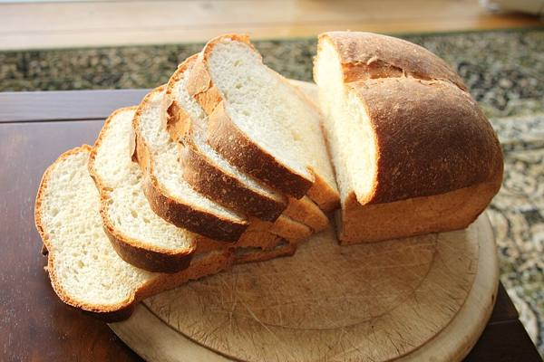 | la miche de pain | loaf | |
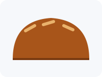 | la croûte | crust | |
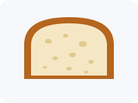 | la mie | crumb | |
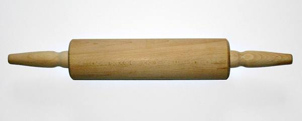 | le rouleau à pâtisserie | rolling pin | |
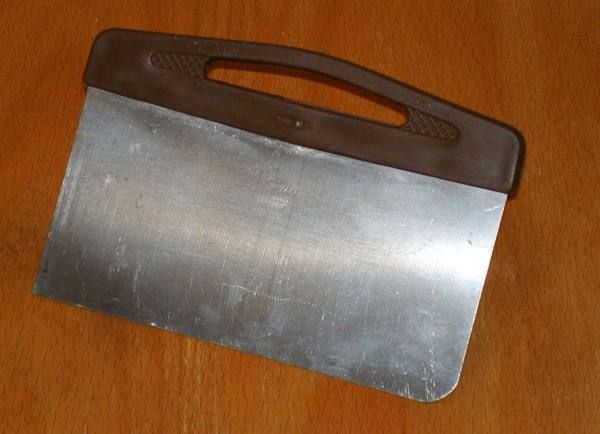 | le coupe-pâte | dough scraper | |
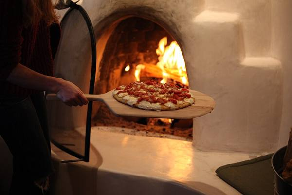 | la pelle à enfourner | baker's peel | |
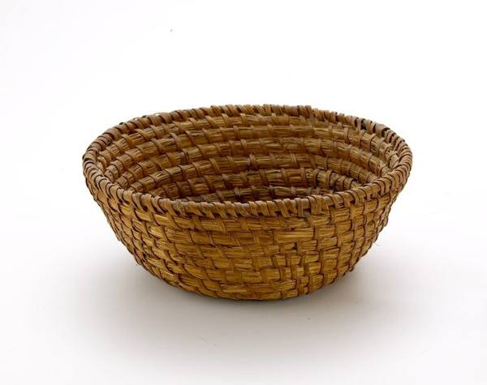 | le banneton | proving basket | |
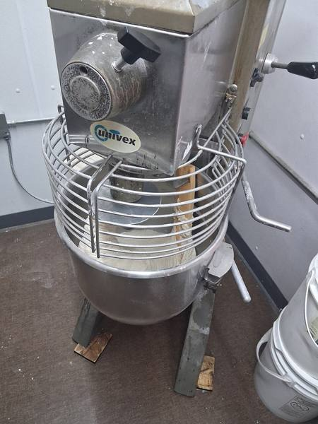 | le pétrin | dough mixer | |
 | la balance | scales | |
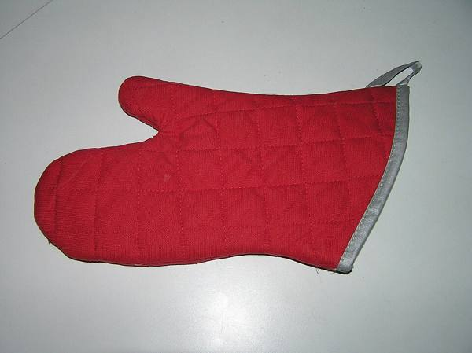 | la manique | oven glove | |
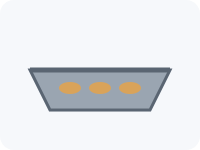 | la plaque de cuisson | baking tray |
Teacher key: sentences at work
- Weigh the flour on the ________. (scales)
- Mix the flour, water, salt and ________. (yeast)
- Let the ________ rise for one hour. (dough)
- Put the bread in the oven with the ________. (baker's peel)
- The ________ is golden and crispy. (crust)
- Use an ________: the tray is hot! (oven glove)
In steps 1, 2 and 3, the right answer is the line in the word list.
Image credits
Photos under an open licence, from Wikimedia Commons, resized for the phone. Original drawings for gestures and ideas.
- la farine (flour) : photo by Mudd1, licence CC BY-SA 3.0, file page on Wikimedia Commons.
- la levure (yeast) : photo by Tiia Monto, licence CC BY-SA 4.0, file page on Wikimedia Commons.
- le sel (salt) : photo by Poyraz 72, licence CC BY-SA 4.0, file page on Wikimedia Commons.
- l'eau (water) : photo by Dr Jean Fortunet, licence CC BY-SA 3.0, file page on Wikimedia Commons.
- la pâte (dough) : photo by Gageills, licence CC0, file page on Wikimedia Commons.
- la miche de pain (loaf) : photo by Mike Finn, licence CC BY 2.0, file page on Wikimedia Commons.
- la croûte (crust) : original drawing, Itinéraires et destinations, CC BY-NC-SA 4.0.
- la mie (crumb) : original drawing, Itinéraires et destinations, CC BY-NC-SA 4.0.
- le rouleau à pâtisserie (rolling pin) : photo by Peter Kammer, licence CC BY-SA 3.0, file page on Wikimedia Commons.
- le coupe-pâte (dough scraper) : photo by Schnolle, licence Public domain, file page on Wikimedia Commons.
- la pelle à enfourner (baker's peel) : photo by Jared Tarbell from Awesometown, United States of America, licence CC BY 2.0, file page on Wikimedia Commons.
- le banneton (proving basket) : photo by BERNARDOT Claude-Henry, licence CC BY-SA 3.0, file page on Wikimedia Commons.
- le pétrin (dough mixer) : photo by Beeblebrox, licence CC BY-SA 4.0, file page on Wikimedia Commons.
- la balance (scales) : photo by Jacek Halicki, licence CC BY-SA 4.0, file page on Wikimedia Commons.
- la manique (oven glove) : photo by Lymantria, licence CC BY-SA 3.0, file page on Wikimedia Commons.
- la plaque de cuisson (baking tray) : original drawing, Itinéraires et destinations, CC BY-NC-SA 4.0.
Vocabulary sheet to print
Large type (16 point minimum), in three formats: